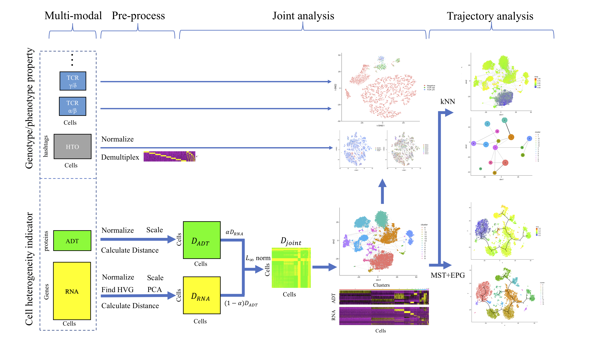

Integrating multiple modalities for precise cell heterogeneity identification
“LinQ-View” was designed as a joint single cell analysis strategy that could integrate information from both transcriptome and surface protein markers for cell heterogeneity identification. The system structure was inspried by Seurat, PAGA and other conventional scRNA-seq tools. To be competiable with Seurat (since they already did amazing work on pre-processing, clustering, batch effects correction and differential expression analysis) and avoid redundant work, we adopted data structure design and integrated some pre-process steps from Seurat V3. Users can use "LinQ-View" for modality integration and "Seurat" for batch effects correction, differential expression analysis on the same dataset without any data conversion.
We use cell-cell distances to represent variations of gene expression in each modality. Cell-cell distances from different modalities could be scaled into same level by a linear transformation, and then being integrated into one distance matrix, which will be able to represent variations of gene expression from multiple modalities. We introduced L-infinite norm model for the distance integration. Since the variations among cells were represented by a cell-cell distance matrix, “LinQ-View” is compatible with all clustering methods (e.g. k-means, Hierarchical clustering, community detection, Louvain, FCM) and dimension reduction methods (e.g. MDS, t-SNE, UMAP). After cell embedding and clustering were constructed, modalities in genotype/phenotype property group could be applied to the result for biological patterns identification and enrichment analysis. We believe that this method could help to identify cell heterogeneity more accurately and also benefit further downstream analysis.
